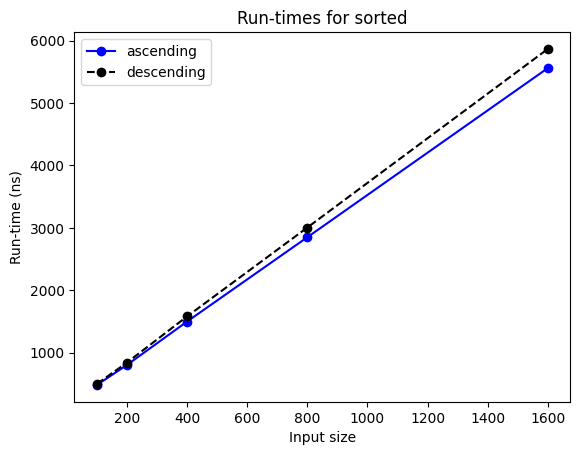

Writing guide
This document provides guidance on how to produce your essay.
Note
Although we wish to accommodate novice programmers in the future, the guide currently has data structures and algorithms students in mind.
An essay can have more than one author, although more than two is harder to manage. Deepnote and Colab make it easy to work collaboratively on a single notebook, at the same time or asynchronously, and leave comments to co-authors. You may wish to first pitch your essay idea to your peers, to recruit co-authors.
In the rest of this guide, ‘you’ and ‘your’ are both singular and plural pronouns, to refer simultaneously to a single author or multiple authors.
Note
You may wish to keep this guide open while going through your copy of our template.
Problem
It’s worth spending time on choosing an appropriate problem before putting effort into an essay about it. You may invent your own problem or select an existing one. For example, it may be a non-assessed exercise from your course, or it may relate to your hobby or work. In so, provide any information the reader needs to understand the problem. If the problem is from your work, get permission from your employer or client.
There are many websites with thousands of algorithmic problems to choose from. We have used Kattis and LeetCode in the past.
Some sites, like LeetCode, tag their problems with the data structure or algorithmic technique needed, like ‘array’ or ‘sorting’. This helps you find problems about a particular topic.
Some sites, like LeetCode, have official and user-provided solutions, but the latter may be terse (single-letter identifiers, no comments) or not fully analysed. Other sites, like the International Olympiad in Informatics, often have just solution hints or outlines. You may thus wish to write an essay that fully implements a solution outline or that improves and compares several user solutions. Either way would be useful to the user community of those sites.
It is often said that the best way to learn a topic is to have to explain it to others. You may thus wish to pick a problem on a topic you’re not comfortable with, choose two existing solutions, and explain them in an essay.
If you’re undecided, make a shortlist of 2–3 problems and ask your peers for their opinion.
Text
An essay presents two or more algorithmic solutions for a computational problem, and concludes which one is better, according to some criteria. Possible criteria include:
- time and space complexity
- empirical run-times and memory used
- simplicity of the solution
- ease of adapting the solution to similar problems.
The essay should thus have a clear narrative, going from the problem to the conclusion.
An algorithmic essay contains more text than code, and while code can and should have comments, the text carries most of the explanation. It’s thus important for the text to be clear and error-free.
Deepnote notebooks can have rich-text cells (headings, paragraph, bullet item, etc.) that, contrary to the Markdown cells, are spell-checked as you write the text and support keyboard shortcuts, like Ctrl + B to put the selected text in bold. Unless you want to keep your essays in Deepnote, we do not recommend using rich-text cells, as their formatting is lost when downloading the notebook to your computer.
Essays can be written in any style: it’s a personal choice. For example, you can use ‘we’, ‘I’ or an impersonal form.
Structure
An essay starts with a title that states the problem or the algorithmic technique to be used. Next, put your name(s) and the current date, which should be updated whenever you edit the essay.
Next, without any heading, comes the introduction. It should state what the essay is about. Normally an essay’s aim is to solve a particular problem, but it may also illustrate a general technique, like space-time trade-offs or recursion, or highlight an issue, like the difference between complexity analysis and run-time performance.
The introduction should also state what you assume the reader to know, as no essay can explain everything from first principles. For example, tell the reader that they must know about binary trees to understand your essay.
Following the introduction, use section headings to structure your essay, for example:
- Problem: this section describes the problem, with some examples.
- Algorithms: this section outlines two or more algorithms that solve the problem and their complexity.
- Implementations: this section implements and tests only the most promising algorithms.
- Comparison: this section compares the implemented algorithms according to other criteria, e.g. their run-times.
- Conclusion: this section summarises the findings and concludes which approach is best.
The algorithms and implementations sections may have subsections, one per algorithm.
An alternative structure implements each approach before evaluating all of them:
- Problem: this section describes the problem, with some examples.
- First approach: this section outlines an algorithm, implements it and tests it.
- Second approach: this section presents another algorithm and its implementation.
- …: further sections, one per approach.
- Evaluation: this section states the criteria to be used and evaluates each approach according to them.
- Conclusion: this section summarises the findings and concludes which approach is best.
If the problem description is a single paragraph, you may include it in the introduction, rather than having a separate section. If you didn’t invent the problem, indicate its source, e.g. by providing a link to a website or by writing something like “This is problem 4.5 in [book title] by [author].”
Algorithms
You should choose at least two sufficiently different algorithms that solve the problem, and describe each one succinctly, preferably before implementing it, to make the code easier to understand for the reader.
We recommend to not describe algorithms that are only slight variants of each other, as this is usually of little interest, and to only include two algorithms in your first draft.
If you’re using solutions by others, e.g. by LeetCode users, acknowledge the original author and provide a link to their solution. If you have modified their solutions, state what you have changed and explain why.
You should include worst-case complexity analyses of the various solutions you propose, as this helps discard the inefficient ones that may not be worth implementing.
Code
Your code should be correct, simple, and as readable as possible. Unless the aim of your essay is to discuss advanced Python constructs, try to use only a basic subset of the language. This allows more people, including those with limited knowledge of Python, to understand your code. It also makes your code easier to port to other programming languages.
We recommend the following workflow, which is further explained in the following subsections.
- Write the tests for your algorithms.
- Implement the algorithms and run the tests.
- Typecheck your code as you run each cell.
- Format your code, cell by cell.
- Check the code style as you run each cell.
Writing the tests (step 1) before the code they test (step 2) is a cornerstone of test-driven development, a widely used practice. Thinking of the tests early in the process helps you better understand the problem and think of correct solutions.
Info
If you followed our ‘getting started’ instructions, the software mentioned in the next subsections to carry out the above workflow is already installed.
Testing
You should write tests for each function, to have some assurance that it is correct. Tests that check the behaviour of a single function are called unit tests. The unit tests should cover normal cases and edge cases: extreme input values and inputs that lead to extreme output values.
For each input, the smallest possible value, e.g. zero or the empty list, is an edge case, and so is the largest possible value, if there is one for that input. If a function is doing a search for an item in a list, then edge cases would be the item being at the start, at the end, or not occurring at all. If the output is a list, then inputs that produce the empty list are edge cases too. In summary, try to think of the ‘trickiest’ inputs the algorithm has to cope with.
We provide a small library to support algorithmic essays: algoesup.
It allows you to easily write and run unit tests. Here’s an example.
(The # fmt: off and # fmt: on lines will be explained later.)
from algoesup import test
# function to be tested
def absolute_difference(x: int, y: int) -> int:
"""Return the absolute value of the difference between x and y."""
return x - y # deliberately wrong, should be abs(x - y)
# fmt: off
# unit tests in tabular form, one test per row
unit_tests = [
# test case, x, y, expected result
("x == y", 1, 1, 0),
("x > y", 10, -1, 11),
("x < y", -1, 10, 11),
]
# fmt: on
# run the function on all test inputs and compare the actual and expected outputs
test(absolute_difference, unit_tests)
Output
Testing absolute_difference…
x < y FAILED: -11 instead of 11
Tests finished: 2 passed, 1 failed.
A unit test consists of the input values to pass to your function and the output value you’re expecting. The library requires a short descriptive string for each unit test, so that it can indicate which tests failed. The library expects unit tests to be in tabular format: one row per test, and one column for the description, one column for each input, and one column for the expected output. In the example above, the test table is a list of tuples, but it could as well be a list of lists, a tuple of lists, or a tuple of tuples.
You should reuse the test table for all solutions, because they’re about the same problem. Here’s a correct function that passes all test cases.
def absolute_difference_without_abs(x: int, y: int) -> int:
"""Return the absolute value of the difference between x and y.
This solution doesn't use the built-in abs() function.
"""
if x > y:
return x - y
else:
return y - x
test(absolute_difference_without_abs, unit_tests) # same test table
Output
Testing absolute_difference_without_abs…
Tests finished: 3 passed, 0 failed.
Type checking
As the above examples show, your code should contain type hints
like x: int and ... -> int to indicate the type of the input and of the output.
They make your code easier to understand, and help type checkers detect any type mismatches,
like passing a string instead of an integer.
The algoesup library also provides an extension for Jupyter notebooks, which you must load first.
%load_ext algoesup.magics
%pytype on
Output
pytype was activated
Words that start with % are special commands (‘magics’) for IPython, the Python interpreter used by Jupyter notebooks.
The %pytype command, provided by our library, activates Google’s pytype type checker.
Once the type checker is activated, it checks each cell immediately after it’s executed. In this way you can detect and fix errors as you write and run each code cell. Here’s an example of what happens.
def double(x: int) -> int:
"""Return twice the value of x."""
return x * 2
double([4])
Output
[4, 4]
pytype found issues:
- 5: Function double was called with the wrong arguments [wrong-arg-types]
The function is executed and produces an output because lists can also be ‘multiplied’ with an integer,
but the type checker detects that line 5 should have passed integers, not lists of integers, to the function.
Clicking on the error name in square brackets leads you to pytype’s website, with more info.
When a type checker only processes one cell at a time, it is missing the wider context,
like the previously defined functions. Therefore, pytype won’t spot all type errors.
However, some checking is better than no checking.
The type checker adds some seconds to the overall time to run each code cell.
You may thus wish to initially turn off the type checking, with %pytype off,
and only turn it on after all code is written and tested.
You will have to run all cells of your notebook for the type checking to take place.
For a list of all the options for the %pytype command,
see the library reference.
Formatting
Note
This subsection only applies to Deepnote.
Once you have written, tested and type checked all your code, you should format it so that it follows the Python community’s code style. You will need to format each cell, as explained here.
If there’s a block of code that you don’t want the formatter to change,
write # fmt: off on its own line before the block and write # fmt: on after the block,
to temporarily switch off formatting for that block.
This feature is especially useful for keeping the format of unit test tables,
as shown in an earlier example.
The Deepnote formatter automatically enforces simple formatting conventions, like 4 spaces for indentation and 2 empty lines between functions, so you will see fewer warnings in the next stage.
Linting
You should lint your code, which means to check it for style violations.
Code style
Our library support ruff, the fastest Python linter.
To turn it on, write the following after loading the algoesup.magics extension.
%ruff on
Output
ruff was activated
From now on, each cell is automatically linted after it’s executed. Here’s an example:
l = [1, 2, 3]
if (not 5 in l) == True:
print("5 isn't in the list")
Output
5 isn’t in the list
ruff found issues:
- 1: [E741] Ambiguous variable name:
l - 2: [PLR2004] Magic value used in comparison, consider replacing 5 with a constant variable
- 2: [E713] Test for membership should be
not in. Suggested fix: Convert tonot in - 2: [E712] Comparison to
Trueshould becond is Trueorif cond:. Suggested fix: Replace withcond is True
Every message indicates the line of the problem.
- The first message is trying to tell us that
lcan be misread for1(one). - The second message recommends using constants, like
EXPECTED_VALUE, instead of literals like 5 that are meaningless to the reader. - The third message tells us that it’s better to write
5 not in l. - The last message says that
== Trueshould beis Trueor simply omitted. The suggested fix is not appropriate for this if-statement: it should beif 5 not in l:.
As this code cell shows, ruff sometimes suggests how to fix the reported error,
but you must consider whether the suggestion is appropriate.
If you don’t understand an error message, like the first one, click on
the error code in brackets, to get more information from ruff’s website.
Like for type checking, linting one cell at a time means that the linter is unaware of the wider context of your code. For example, in notebooks, variables may be defined in one cell but used in a later cell. As the linter checks each cell separately, it would report an undefined variable in the later cell. We have disabled checks for undefined variables and other checks that would lead to irrelevant error messages in notebooks, which means that genuine undefined variables won’t be flagged. But again, some linting is better than none.
If you get errors that you think are irrelevant,
you can disable them with the --ignore option:
see the library reference.
Language subset
Our library also supports the allowed linter, created by ourselves.
It checks whether your code only uses a certain subset of the Python language.
This gives you some reassurance that your code will be understood by a wide audience.
By default, allowed checks against the Python subset used in our
algorithms and data structures course.
So, if you’re an M269 student, to check that your essay is easily understood
by your peers in terms of Python constructs, just add the following after loading the extension:
%allowed on
Output
allowed was activated
Henceforth, after a cell is executed, the allowed linter will list any constructs,
modules or built-in types we haven’t taught, like this:
from math import pi, sin
print(f"π is approximately {pi:.5f}.")
Output
π is approximately 3.14159.
allowed found issues:
- 1: sin
- 3: f-string
We haven’t taught the math.sin() function nor f-strings, and allowed reports these.
Any line that ends with the comment # allowed is ignored. This is useful when
you don’t want the linter to flag a construct that you explain in your essay.
For example, adding the comment after print(...) would not report the f-string.
Note that the comment makes the tool skip the whole line:
if it has several constructs that weren’t taught, none of them is reported.
The allowed linter also includes the configuration for TM112, our introductory Computing course,
in case you want to use even fewer constructs in your essay.
To use that configuration, write %allowed --config tm112.json on.
For a list of all the options for the %allowed command,
see the library reference.
You can configure the linter with a JSON file that lists the allowed constructs.
In Deepnote, rename
the allowed.json JSON configuration in the Files section of your project,
and adapt it to your course.
See the allowed website for instructions.
Performance analysis
Complexity analysis gives an indication of how the run-times will grow as the inputs grow, but it can’t predict the exact run-times nor which algorithm is in practice fastest.
Our library helps measure and plot the run-times of one function on different kinds of input, or of different functions on the same inputs.
For example, let’s suppose our essay is about sorting algorithms and we have implemented selection sort.
def selection_sort(values: list[int]) -> list[int]:
"""Return a copy of the values, in ascending order."""
result = values[:]
for current in range(len(result) - 1):
# select the smallest element in result[current:] ...
smallest = current
for index in range(current + 1, len(result)):
if result[index] < result[smallest]:
smallest = index
# ... and swap it with the current element
result[current], result[smallest] = result[smallest], result[current]
return result
Generating inputs
To measure the run-times of sorting algorithms on increasingly large lists, we must implement functions that generate such lists. For example, we can write a function that generates lists that are already in ascending order, which is a best case for many sorting algorithms, and a function that generates lists that are in descending order, which is a worst case for some sorting algorithms.
The library expects such input-generating functions to take a non-negative integer n, and to produce a tuple of input values, with total size n. Why a tuple? Although our sorting algorithm takes a single input (a list of integers), many algorithms take more than one input. Thus the input-generating functions must generate a tuple of inputs, in the same order as expected by the algorithm.
def ascending(n: int) -> tuple[list[int]]:
"""Return a list of n integers in ascending order."""
return (list(range(1, n + 1)),) # trailing comma to make it a tuple
def descending(n: int) -> tuple[list[int]]:
"""Return a list of n integers in descending order."""
return (list(range(n, 0, -1)),)
Comparing cases
To measure the run-times of a function f on best, average and worst case inputs, use
library function time_cases(f, [case1, case2, ...], s, d).
The second argument can be a list (or tuple) of up to 6 input-generating functions.
The time_cases function works as follows.
- Call
case1(s)to generate inputs of sizesforf. - Run function
fon the generated inputs and measure its run-time. - Do the two previous steps with each of the functions
case2, .... - Set
sto double its value and go back to step 1.
The whole process stops when s has been doubled d times.
If d is zero, the run-times are only measured for size s.
Here’s how we could measure the run-times for selection sort on ascending and descending lists.
from algoesup import time_cases
time_cases(selection_sort, [ascending, descending], start=100, double=4)
Output
Run-times for selection_sort
Input size ascending descending
100 168.2 173.2 µs
200 643.2 660.6 µs
400 2716.7 2817.9 µs
800 11072.4 11407.3 µs
1600 44285.3 45512.7 µs
Running selection sort on lists from 100 to 1600 integers takes about 170 microseconds to 45 milliseconds.
To measure precisely such small time spans, function f (here, selection_sort) is called
multiple times on the same input, within a loop, and the total time is divided by
the number of iterations, to obtain a better estimate of the time taken by a single call to f.
The whole process is repeated 3 times, because the run-times will vary due to other processes running on the computer.
The lowest of the 3 run-times is reported.
Because function f is called multiple times, it is very important that f does not modify its inputs.
For example, if selection_sort sorted the list in-place, instead of returning a new list,
then the first call would put the numbers in ascending order, and the subsequent calls
would just try to sort an already sorted list, swapping no numbers.
We would obtain almost exact same times for ascending and descending input lists,
instead of always larger times for descending lists, as shown above.
When executing a code like the previous one, be patient while waiting for the results. Even though each call may just take a few milliseconds or less, the code cell will take several seconds or even minutes to execute, because the function is called many times to make the measurements more robust.
Comparing functions
Our library also allows you to compare different algorithms for the same input case.
For that, use time_functions([f1, f2, ...], case, s, d), which does the following:
1. Call case(s) to generate inputs of total size s.
2. Call each function f1, f2, etc. on the generated inputs and measure their run-times.
3. Double the value of s and go to step 1, unless s has been doubled d times.
The run-times are measured as for time_cases: take the best of 3 run-times, each obtained by
calling the function within a loop and dividing the total time by the number of iterations.
Here’s a comparison of the built-in sorted function against selection sort, on descending lists.
from algoesup import time_functions
time_functions([selection_sort, sorted], descending, start=100, double=4)
Output
Inputs generated by descending
Input size selection_sort sorted
100 172.8 0.5 µs
200 660.7 0.8 µs
400 2795.7 1.6 µs
800 11534.0 3.1 µs
1600 45470.0 5.9 µs
As expected, the built-in sorting implementation is much, much faster.
Charting run-times
If you add argument chart=True to time_cases or time_functions, then
you will see a line chart of the run-times, in addition to the exact run-times.
If you only want to see the chart, then add arguments text=False, chart=True.
time_cases(sorted, [ascending, descending], 100, 4, text=False, chart=True)
Output

time_functions([sorted, selection_sort], ascending, 100, 4, chart=True)
Output
Inputs generated by ascending
Input size sorted selection_sort
100 482.1 168025.5 ns
200 808.3 646093.8 ns
400 1496.9 2720369.2 ns
800 2850.4 11090135.4 ns
1600 5553.0 44372758.4 ns
The 1e7 above the y-axis means that the run-times must be multiplied by 10⁷, i.e. 10 million.
Note that when calling time_functions([selection_sort, sorted], ...) the run-times were reported in microseconds,
but when calling time_functions([sorted, selection_sort], ...) they were in nanoseconds.
The reason is that the library chooses the time unit based on the first run-time measured.
If there’s a big time difference between the fastest and slowest cases or algorithms,
you may wish for the first function in the list to be the slowest one, to report it with
small values in a ‘large’ time unit, instead of very large values in a ‘small’ time unit.
So, in time_functions([f1, f2, ...], case, ...) the slowest function should be f1,
and in time_cases(f, [case1, case2, ...], ...) the worst case should be case1.
Interpreting run-times
If, as the input size doubles, the run-times…
- …remain the same, then the function has constant complexity.
- …also double, then the function has linear complexity.
- …quadruple, then the function has quadratic complexity.
- …increase by a fixed amount, then the function has logarithmic complexity.
Looking at the run-times reported in the previous subsections, we can see that
sorted is linear because the run-times about double when the input size doubles,
whereas selection sort is quadratic because the run-times increase about 4-fold when the input size doubles.
Remember that run-times vary every time you execute a cell because the computer
is executing other processes. This may lead to the odd behaviour here and there.
For example, we have noted that sorted is occasionally faster for descending lists,
which is counter-intuitive because it does have to reverse them.
If you can’t see any trend in the run-times, or they aren’t what you expect,
one possible cause is that the input sizes are too small.
Increase start and run again the code cell.
If after increasing the start size several times you still don’t get the run-times you expect from your complexity analysis, then there might be other explanations:
- your complexity analysis is wrong
- your implemented algorithm modifies its input
- your input-generating functions are not generating best or worst cases.
For an example of the latter, see the Jewels and Stones essay.
Final check
Whether it’s your essay’s first draft or final version, before you share it with others, you should restart the kernel and run all cells, so that you have a ‘clean’ version. Then, after a break, read your essay with ‘fresh eyes’ from start to end and fix any typos or missing explanations you find.
Look at the table of contents of your notebook and check that your section headings are at the right level.
Info
In Deepnote, the table of contents is on the left sidebar; in Colab, you must click the bullet list icon in the left sidebar.
Finally, let others comment on your essay and help you produce a better version. See our feedback guide for details.
Further reading
If you’re interested and have the time, here are further details on some of the above.
- Strunk and White’s The Elements of Style is a classic. The examples are dated but the advice is good.
- The websites of allowed, pytype and ruff.
- A summary of Python’s type hints provided by the
mypyproject (another type checker). - The Python code style and docstring conventions.
- The formatting style enforced by
black, which we suspect is the formatter used by Deepnote. Deepnote ignores the# fmt: skipdirective to not format a single line.